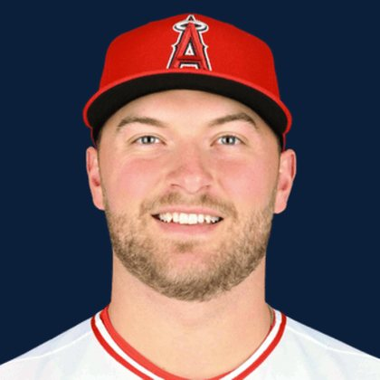

BASEBALLKEEP
Dynasty · Redraft · Diamond
Player File · SP LAA

Reid Detmers
#48 · SP · Los Angeles Angels · age 26 · B/T LL · 6' 2" / 210 lbs · MLB debut 2021 · Nokomis, USA
Keep avg198.0
# Boards2
BK Value127
Spread191–205
Pitching
| Year | G | GS | W | L | SV | HLD | IP | K | BB | HR | ERA | WHIP | K/9 |
|---|---|---|---|---|---|---|---|---|---|---|---|---|---|
| 2026 | 25 | 25 | 4 | 8 | 0 | 0 | 143.0 | 167 | 43 | 17 | 3.78 | 1.06 | 10.51 |
| 2025 | 61 | 0 | 5 | 3 | 3 | 13 | 63.2 | 80 | 25 | 6 | 3.96 | 1.30 | 11.31 |
The Keep#218BK 127
BK's Pitchers#75BK 1,627
Redraft#218BK 127
Baseball Savant
Starcast · spray · pitch
Percentile ranks (Starcast) plus the official Savant spray chart for bats and pitch chart for arms. Open the full Baseball Savant page.
Pitcher · 2026
xERA
79
xwOBA
79
FB Velo
41
FB Spin
18
CU Spin
42
K %
87
BB %
64
Whiff %
81
Chase %
68
Barrel %
37
Hard Hit %
48
EV
20
Max EV
25
Pitch chart
Every Board
Spread 191–205 · 2 sources
| Source | Rank |
|---|---|
| RotoGraphs Model | 191 |
| ATC ROS | 205 |
On The Keep nearby — Spencer Miles (#216) · Gerrit Cole (#217) · Travis Bazzana (#219) · Thomas White (#220)
All players · The Keep · BK News · The Lineup · Pitchers · Calculator